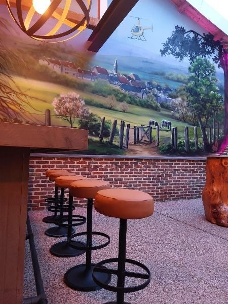
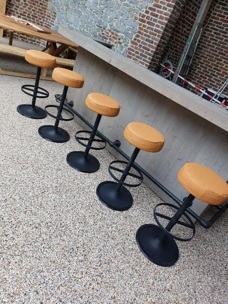
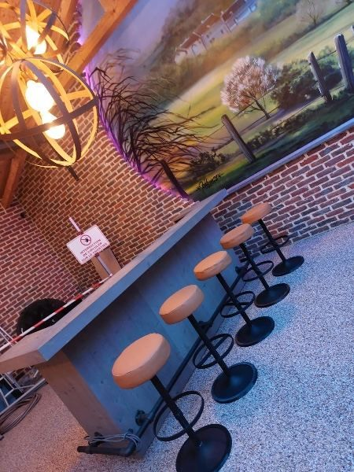

Semelles de tabourets 40 cm pour des gîtes à Herve
Un propriétaire de deux gîtes Airbnb à Herve (province de Liège) nous a commandé des semelles de pied de tabouret de 40 cm de diamètre, introuvables dans cette taille dans le commerce. Prototype réalisé sans frais supplémentaires, production des 5 pièces sur notre Elegoo OrangeStorm. 24h d'impression par semelle.

Les semelles en situation : de l'impression aux gîtes







Un propriétaire en rénovation avec des pièces introuvables dans ce format
Un propriétaire de deux gîtes à Herve, dans la province de Liège, nous a contactés lors de la rénovation de ses établissements en location Airbnb. Son projet: créer un espace bar avec des tabourets de style industriel. Les tabourets avaient été trouvés, mais il leur manquait un élément crucial: des semelles de pied rondes de 40 cm de diamètre pour les stabiliser sur le sol et les finir esthétiquement.
Ce type de semelle, dans ces dimensions précises et avec cet aspect, était totalement introuvable dans le commerce. Trop grande pour les quincailleries standards, trop spécifique pour les catalogues de mobilier de masse. L'impression 3D sur mesure était la solution évidente, et la seule permettant d'obtenir exactement les 40 cm requis avec la finition souhaitée.
Après nos échanges avec le client, nous avons d'abord réalisé un prototype pour valider les dimensions, la finition et la façon dont la semelle s'adapte à la base du tabouret. Ce prototype a été réalisé sans frais supplémentaires, notre engagement systématique pour les projets où les cotes doivent être validées avant production.
PLA noir mat, 40 cm de diamètre, Elegoo OrangeStorm · 24h par pièce
Prototype validé, nous avons lancé la production sur notre Elegoo OrangeStorm, notre imprimante grand format. Avec un diamètre de 40 cm, ces semelles dépassent la capacité de la quasi-totalité des imprimantes FDM standards du marché, c'est précisément pour ce type de pièce grande dimension que nous avons investi dans un parc de machines à grand plateau.
Le matériau retenu est le PLA noir mat. Ce choix s'explique par l'usage: la semelle est une pièce d'habillage décoratif, visible mais non soumise à des contraintes thermiques ou chimiques importantes. Le PLA noir mat offre une rigidité et une planéité excellentes sur cette grande surface, ainsi qu'une belle finition esthétique en accord avec le style industriel des tabourets.
Chaque semelle a nécessité environ 24 heures d'impression pour garantir un résultat solide et homogène sur l'ensemble des 40 cm de diamètre. La production des 5 semelles s'est étalée sur plusieurs jours. Le résultat final s'intègre parfaitement à l'espace bar des gîtes, avec un rendu esthétique cohérent qui n'a pas l'air imprimé en 3D, c'est le compliment que nous cherchons.
L'impression 3D pour les propriétaires de gîtes, Airbnb et espaces de réception
Les propriétaires de gîtes, chambres d'hôtes, hôtels et espaces événementiels ont souvent des besoins très spécifiques que le mobilier industriel standard ne peut pas satisfaire: pièces aux dimensions atypiques, éléments de décoration sur mesure, pièces de remplacement pour du mobilier de caractère introuvable.
Notre service d'impression 3D grand format, avec notre Modix Big Meter (jusqu'à 1m³) et notre Elegoo OrangeStorm, nous permet de répondre à des demandes que d'autres ateliers ne peuvent pas prendre en charge. Que ce soit pour des semelles de tabourets, des éléments de signalétique, des pièces décoratives ou du mobilier fonctionnel, nous étudions chaque demande.
Nous proposons systématiquement un prototype avant production, inclus dans nos tarifs ou réalisé sans frais selon le projet. Répondez-nous avec vos dimensions et votre idée, nous vous répondons sous 24h avec une évaluation de faisabilité et un devis.
Confidentialité & NDA: Les réalisations que nous partageons ici sont présentées avec l'accord explicite de nos clients. Tout projet soumis à un accord de non-divulgation reste strictement confidentiel, aucune photo, aucun détail technique ne sera jamais divulgué sans autorisation. Vos fichiers et projets sont protégés.
D'autres projets

Pièce en polypropylène pour une logopède
Outil de rééducation sur mesure pour logopède, reproduit en polypropylène par impression 3D et adapté aux besoins des patients.
Ouvrir la fiche →
Engrenage de hachoir reproduit en 3D
Engrenage de hachoir cassé reproduit en PLA : rétroconception en 1 h, pièce prête en moins de 48 h.
Ouvrir la fiche →
Pièces d'Audi S3 reproduites en PAHT-CF
Reproduction de pièces Audi S3 endommagées en PAHT-CF et PLA : grille de pare-chocs et caches logo S3.
Ouvrir la fiche →
Rails miniatures pour la maquette Infrabel
Rails miniatures en PLA imprimés en 3D pour la maquette d'inauguration d'Infrabel.
Ouvrir la fiche →
Pic de barrière reproduit en ASA
Pic de barrière décoratif cassé, redessiné à partir de photos et réimprimé en ASA résistant aux UV sur Bambu Lab X1C.
Ouvrir la fiche →
300 porte-clés bicolores pour Lx Cars
300 porte-clés bicolores au logo Lx Cars, en PLA, livrés par lots de 10 après validation d'un prototype. Bambu Lab X1C + AMS.
Ouvrir la fiche →Un projet similaire ?
Envoyez-nous votre pièce, votre fichier ou une simple photo : réponse sous 24 h.